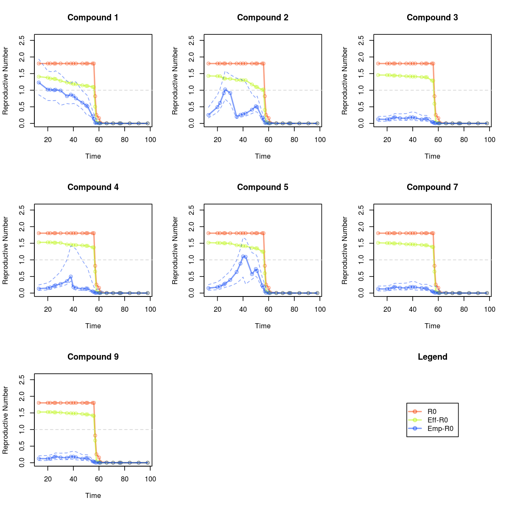

Analysis
In the code below, we read in the data, perform some initial processing, and declare the functions which will perform the two analyses.
# Compounds 1,2,3,4,5,7,8 N = matrix(c(32,14,9,32,21,19,32), nrow = nrow(I_star),ncol = ncol(I_star),byrow=TRUE) X = matrix(1, nrow = ncol(I_star)) # Declare a function which can come up with several different starting values # for the model parameters. This will allow us to assess convergence. proposeParameters = function(seedVal, chainNumber, underspecified=FALSE) { set.seed(seedVal) # Declare prior parameters for the E to I and I to R probabilities. # Middle prior from LF priorAlpha_gammaEI = 20; priorBeta_gammaEI = 100; priorAlpha_gammaIR = 20; priorBeta_gammaIR = 140; # 2 to 21 day incubation period according to WHO p_ei = 0.25 + rnorm(1, 0, 0.02) # Up to 7 weeks even after recovery p_ir = 0.14 + rnorm(1, 0, 0.01) gamma_ei=-log(1-p_ei) gamma_ir=-log(1-p_ir) phi = 0.01 # Overdispersion precision outFileName = paste("./chain_output_smpox_", chainNumber ,".txt", sep = "") # Make a crude guess as to the true compartments: # S_star, E_star, R_star, and thus S,E,I and R DataModel = buildDataModel(I_star, type = "identity") if (!underspecified){ hasIntervention = rptDate > interventionDate Z = cbind(hasIntervention*(rptDate-interventionDate)) Z = Z[rep(1:nrow(Z), nrow(X)),,drop=FALSE] beta = rep(0, ncol(X) + ncol(Z)) beta[1] = 2.5 + rnorm(1,0,0.5) ExposureModel = buildExposureModel(X=X, Z=Z, beta=beta, betaPriorPrecision = c(0.5,0.5), betaPriorMean = c(0,0), offset=offsets) } else{ beta = rep(0, ncol(X)) beta[1] = 2.5 + rnorm(1,0,0.5) ExposureModel = buildExposureModel(X=X, Z=NA, beta=beta, betaPriorPrecision = c(0.5), betaPriorMean = c(0), offset=offsets, nTpt = length(rptDate)) } ReinfectionModel = buildReinfectionModel("SEIR") SamplingControl = buildSamplingControl(iterationStride=iterationStride) InitContainer = buildInitialValueContainer(I_star, N, S0 = c(N[1,]-I_star[1,]-1), E0 = I0, I0 = I0, reinfection = FALSE, dataType = "I_star") DM = matrix(1, nrow = nrow(X), ncol = nrow(X)) - diag(nrow(X)) DM = DM / nrow(X) DistanceModel = buildDistanceModel(list(DM)) TransitionPriors = buildTransitionPriorsManually(priorAlpha_gammaEI,priorBeta_gammaEI, priorAlpha_gammaIR,priorBeta_gammaIR) return(list(DataModel=DataModel, ExposureModel=ExposureModel, ReinfectionModel=ReinfectionModel, SamplingControl=SamplingControl, InitContainer=InitContainer, DistanceModel=DistanceModel, TransitionPriors=TransitionPriors, outFileName=outFileName)) } buildModels = function(params) { library(spatialSEIR) proposal <<- proposeParameters(params[["seedVal"]], params[["chainNumber"]], params[["underspecified"]]) SEIRmodel = buildSEIRModel(proposal$outFileName, proposal$DataModel, proposal$ExposureModel, proposal$ReinfectionModel, proposal$DistanceModel, proposal$TransitionPriors, proposal$InitContainer, proposal$SamplingControl) localModelObject <<- SEIRmodel SEIRmodel$setRandomSeed(params[["seedVal"]]) # Do we need to keep track of compartment values for prediction? # No sense doing this for all of the chains. if (params[["traceCompartments"]]) { SEIRmodel$setTrace(0) #There's only one spatial location } # Make a helper function to run each chain, as well as update the metropolis # tuning parameters. runSimulation <<- function(modelObject, numBatches=500, batchSize=20, targetAcceptanceRatio=0.2, tolerance=0.05, proportionChange = 0.1 ) { for (batch in 1:numBatches) { modelObject$simulate(batchSize) modelObject$updateSamplingParameters(targetAcceptanceRatio, tolerance, proportionChange) } } # Burn in tuning parameters runSimulation(SEIRmodel, numBatches = numBurnInBatches) runSimulation(SEIRmodel, numBatches = numBurnInBatches, batchSize = 100) SEIRmodel$compartmentSamplingMode = 17 SEIRmodel$parameterSamplingMode=7 SEIRmodel$performHybridStep = 10 SEIRmodel$useDecorrelation = 50 # Run Simulation } additionalIterations = function(params) { N = params[[1]] localModelObject$simulate(N) } estimateR0 = function(params) { extraIterations = params[[1]] batchSize = params[[2]] R0 = array(0, dim = c(nrow(localModelObject$I_star), ncol(localModelObject$I_star), extraIterations)) empiricalR0 = R0 effectiveR0 = R0 for (i in 1:(extraIterations)) { localModelObject$simulate(batchSize) for (j in (0:(nrow(localModelObject$I_star) - 1))) { R0[j,,i] = localModelObject$estimateR0(j) effectiveR0[j,,i] = localModelObject$estimateEffectiveR0(j) empiricalR0[j,,i] = apply(localModelObject$getIntegratedGenerationMatrix(j), 1, sum) } } R0Mean = apply(R0, 1:2, mean) R0LB = apply(R0, 1:2, quantile, probs = 0.05) R0UB = apply(R0, 1:2, quantile, probs = 0.95) empiricalR0Mean = apply(empiricalR0, 1:2, hpdEst) empiricalR0LB = apply(empiricalR0, 1:2, quantile, probs = 0.05) empiricalR0UB = apply(empiricalR0, 1:2, quantile, probs = 0.95) effectiveR0Mean = apply(effectiveR0, 1:2, hpdEst) effectiveR0LB = apply(effectiveR0, 1:2, quantile, probs = 0.05) effectiveR0UB = apply(effectiveR0, 1:2, quantile, probs = 0.95) R0List = list(R0 = list(mean=R0Mean, LB=R0LB, UB=R0UB), empiricalR0 = list(mean = empiricalR0Mean, LB = empiricalR0LB, UB = empiricalR0UB), effectiveR0 = list(mean = effectiveR0Mean, LB = effectiveR0LB, UB = effectiveR0UB) ) return(R0List) } hpdEst = function(vec) { dens = density(vec) dens$x[which.max(dens$y)] } # Nice colors alpha = 0.5 col1 = rgb(245/255, 61/255, 0, alpha) col2 = rgb(184/255, 245/255, 0, alpha) col3 = rgb(0, 61/255, 245/255, alpha) plotChains = function (variableName, ...) { alpha = 0.6 cex = 0.8 lwd = 1.2 plot(dat1[[variableName]], main = variableName, pch = 16, cex = cex, col = col1, type = "n", ylab = "Variable Value", ...) ylims = par("yaxp")[1:2] yrange = ylims[2] - ylims[1] abline(h = seq(min(ylims) - yrange, max(ylims) + yrange, length = 20), col = "lightgrey", lty = 2) points(dat1[[variableName]], pch = 16, cex = cex, col = col1) lines(dat1[[variableName]], col = col1, lwd = lwd) points(dat2[[variableName]], pch = 16, cex = cex, col = col2) lines(dat2[[variableName]], col = col2, lwd = lwd) points(dat3[[variableName]], pch = 16, cex = cex, col = col3) lines(dat3[[variableName]], col = col3, lwd = lwd) }
Now let's run the first analysis:
## Parameters which govern model construction paramsList = list(list("estimateR0"=FALSE, "traceCompartments"=TRUE, "seedVal"=123123, "chainNumber"=1, "underspecified"=FALSE), list("estimateR0"=TRUE, "traceCompartments"=TRUE, "seedVal"=1299224,"chainNumber"=2, "underspecified"=FALSE), list("estimateR0"=FALSE,"traceCompartments"=FALSE, "seedVal"=123125,"chainNumber"=3, "underspecified"=FALSE)) ## Parameters which fix iterations between convergence checks iterationParams = list(list(20000),list(20000),list(20000)) ## Make a parallel cluster cl = makeCluster(3, outfile = "err.txt") ## Send required data and functions to the nodes clusterExport(cl, c("proposeParameters", "X","interventionDate", "rptDate", "N","I_star","beta", "I0", "offsets", "iterationStride", "numBurnInBatches", "hpdEst")) # Build models and store model objects in cluster nodes. tmp = parLapply(cl, paramsList, buildModels) ## Run the chains fileNames = paste("./chain_output_smpox_", 1:3 ,".txt", sep = "") conv = FALSE while (!conv) { cat("Not converged, adding iterations...\n") parLapply(cl, iterationParams, additionalIterations) conv = checkConvergence(fileNames[1], fileNames[2], fileNames[3], maxVal=convergenceCriterion) }
## Not converged, adding iterations... ## Convergence Criterion: 1.77, param: gamma_ir ## Not converged, adding iterations... ## Convergence Criterion: 1.59, param: gamma_ei ## Not converged, adding iterations... ## Convergence Criterion: 1.64, param: gamma_ei ## Not converged, adding iterations... ## Convergence Criterion: 1.48, param: gamma_ei ## Not converged, adding iterations... ## Convergence Criterion: 1.38, param: gamma_ei ## Not converged, adding iterations... ## Convergence Criterion: 1.28, param: gamma_ei ## Not converged, adding iterations... ## Convergence Criterion: 1.29, param: gamma_ei ## Not converged, adding iterations... ## Convergence Criterion: 1.33, param: BetaP_SE_1 ## Not converged, adding iterations... ## Convergence Criterion: 1.36, param: BetaP_SE_1 ## Not converged, adding iterations... ## Convergence Criterion: 1.35, param: BetaP_SE_1 ## Not converged, adding iterations... ## Convergence Criterion: 1.35, param: BetaP_SE_1 ## Not converged, adding iterations... ## Convergence Criterion: 1.4, param: BetaP_SE_1 ## Not converged, adding iterations... ## Convergence Criterion: 1.45, param: BetaP_SE_1 ## Not converged, adding iterations... ## Convergence Criterion: 1.49, param: BetaP_SE_1 ## Not converged, adding iterations... ## Convergence Criterion: 1.52, param: BetaP_SE_1 ## Not converged, adding iterations... ## Convergence Criterion: 1.49, param: BetaP_SE_1 ## Not converged, adding iterations... ## Convergence Criterion: 1.48, param: BetaP_SE_1 ## Not converged, adding iterations... ## Convergence Criterion: 1.49, param: BetaP_SE_1 ## Not converged, adding iterations... ## Convergence Criterion: 1.47, param: BetaP_SE_1 ## Not converged, adding iterations... ## Convergence Criterion: 1.47, param: BetaP_SE_1 ## Not converged, adding iterations... ## Convergence Criterion: 1.23, param: BetaP_SE_1 ## Not converged, adding iterations... ## Convergence Criterion: 1.13, param: BetaP_SE_1 ## Not converged, adding iterations... ## Convergence Criterion: 1.08, param: BetaP_SE_1 ## Not converged, adding iterations... ## Convergence Criterion: 1.06, param: gamma_ir ## Not converged, adding iterations... ## Convergence Criterion: 1.05, param: gamma_ir ## Not converged, adding iterations... ## Convergence Criterion: 1.04, param: gamma_ei ## Not converged, adding iterations... ## Convergence Criterion: 1.04, param: gamma_ei ## Not converged, adding iterations... ## Convergence Criterion: 1.04, param: gamma_ei ## Not converged, adding iterations... ## Convergence Criterion: 1.03, param: gamma_ei ## Not converged, adding iterations... ## Convergence Criterion: 1.03, param: gamma_ei ## Not converged, adding iterations... ## Convergence Criterion: 1.03, param: BetaP_SE_0 ## Not converged, adding iterations... ## Convergence Criterion: 1.03, param: BetaP_SE_1 ## Not converged, adding iterations... ## Convergence Criterion: 1.03, param: BetaP_SE_1 ## Not converged, adding iterations... ## Convergence Criterion: 1.03, param: BetaP_SE_1 ## Not converged, adding iterations... ## Convergence Criterion: 1.03, param: BetaP_SE_1 ## Not converged, adding iterations... ## Convergence Criterion: 1.03, param: BetaP_SE_1 ## Not converged, adding iterations... ## Convergence Criterion: 1.04, param: BetaP_SE_1 ## Not converged, adding iterations... ## Convergence Criterion: 1.05, param: BetaP_SE_1 ## Not converged, adding iterations... ## Convergence Criterion: 1.05, param: BetaP_SE_1 ## Not converged, adding iterations... ## Convergence Criterion: 1.05, param: BetaP_SE_1 ## Not converged, adding iterations... ## Convergence Criterion: 1.04, param: BetaP_SE_1 ## Not converged, adding iterations... ## Convergence Criterion: 1.03, param: BetaP_SE_1 ## Not converged, adding iterations... ## Convergence Criterion: 1.02, param: BetaP_SE_1
## Finish up R0Params = list(list(1000,100), list(1000,100), list(1000,100)) R0Estimates = parLapply(cl, R0Params, estimateR0) R0 = R0Estimates[[1]]$R0 effectiveR0 = R0Estimates[[1]]$effectiveR0 empiricalR0 = R0Estimates[[1]]$empiricalR0 chain1=read.csv(fileNames[1]) chain2=read.csv(fileNames[2]) chain3=read.csv(fileNames[3]) stopCluster(cl)
Below is a comparison of the three reproductive numbers.

Now let's run the underspecified analysis, and see how things change.
## Parameters which govern model construction paramsList = list(list("estimateR0"=FALSE, "traceCompartments"=TRUE, "seedVal"=123123, "chainNumber"=1, "underspecified"=TRUE), list("estimateR0"=TRUE, "traceCompartments"=TRUE, "seedVal"=1299224,"chainNumber"=2, "underspecified"=TRUE), list("estimateR0"=TRUE,"traceCompartments"=TRUE, "seedVal"=123125,"chainNumber"=3, "underspecified"=TRUE)) ## Parameters which fix iterations between convergence checks iterationParams = list(list(20000),list(20000),list(20000)) ## Make a parallel cluster cl = makeCluster(3, outfile = "err.txt") ## Send required data and functions to the nodes clusterExport(cl, c("proposeParameters", "X","interventionDate", "rptDate", "N","I_star","beta", "I0", "offsets", "iterationStride", "numBurnInBatches", "hpdEst")) # Build models and store model objects in cluster nodes. tmp = parLapply(cl, paramsList, buildModels) ## Run the chains fileNames = paste("./chain_output_smpox_", 1:3 ,".txt", sep = "") conv = FALSE while (!conv) { cat("Not converged, adding iterations...\n") parLapply(cl, iterationParams, additionalIterations) conv = checkConvergence(fileNames[1], fileNames[2], fileNames[3], maxVal=convergenceCriterion) }
## Not converged, adding iterations... ## Convergence Criterion: 1.59, param: gamma_ir ## Not converged, adding iterations... ## Convergence Criterion: 1.57, param: gamma_ir ## Not converged, adding iterations... ## Convergence Criterion: 1.47, param: BetaP_SE_0 ## Not converged, adding iterations... ## Convergence Criterion: 1.33, param: gamma_ir ## Not converged, adding iterations... ## Convergence Criterion: 1.28, param: gamma_ei ## Not converged, adding iterations... ## Convergence Criterion: 1.3, param: gamma_ei ## Not converged, adding iterations... ## Convergence Criterion: 1.35, param: gamma_ei ## Not converged, adding iterations... ## Convergence Criterion: 1.4, param: gamma_ei ## Not converged, adding iterations... ## Convergence Criterion: 1.35, param: gamma_ei ## Not converged, adding iterations... ## Convergence Criterion: 1.37, param: gamma_ei ## Not converged, adding iterations... ## Convergence Criterion: 1.39, param: gamma_ei ## Not converged, adding iterations... ## Convergence Criterion: 1.48, param: gamma_ei ## Not converged, adding iterations... ## Convergence Criterion: 1.54, param: gamma_ei ## Not converged, adding iterations... ## Convergence Criterion: 1.54, param: gamma_ei ## Not converged, adding iterations... ## Convergence Criterion: 1.5, param: gamma_ei ## Not converged, adding iterations... ## Convergence Criterion: 1.46, param: gamma_ei ## Not converged, adding iterations... ## Convergence Criterion: 1.44, param: gamma_ei ## Not converged, adding iterations... ## Convergence Criterion: 1.4, param: gamma_ei ## Not converged, adding iterations... ## Convergence Criterion: 1.33, param: gamma_ei ## Not converged, adding iterations... ## Convergence Criterion: 1.34, param: gamma_ei ## Not converged, adding iterations... ## Convergence Criterion: 1.38, param: gamma_ei ## Not converged, adding iterations... ## Convergence Criterion: 1.41, param: gamma_ei ## Not converged, adding iterations... ## Convergence Criterion: 1.39, param: gamma_ei ## Not converged, adding iterations... ## Convergence Criterion: 1.35, param: gamma_ei ## Not converged, adding iterations... ## Convergence Criterion: 1.31, param: gamma_ei ## Not converged, adding iterations... ## Convergence Criterion: 1.31, param: gamma_ei ## Not converged, adding iterations... ## Convergence Criterion: 1.28, param: gamma_ei ## Not converged, adding iterations... ## Convergence Criterion: 1.27, param: gamma_ei ## Not converged, adding iterations... ## Convergence Criterion: 1.24, param: gamma_ir ## Not converged, adding iterations... ## Convergence Criterion: 1.25, param: gamma_ei ## Not converged, adding iterations... ## Convergence Criterion: 1.25, param: gamma_ei ## Not converged, adding iterations... ## Convergence Criterion: 1.27, param: gamma_ei ## Not converged, adding iterations... ## Convergence Criterion: 1.27, param: gamma_ei ## Not converged, adding iterations... ## Convergence Criterion: 1.28, param: gamma_ei ## Not converged, adding iterations... ## Convergence Criterion: 1.29, param: gamma_ei ## Not converged, adding iterations... ## Convergence Criterion: 1.29, param: gamma_ei ## Not converged, adding iterations... ## Convergence Criterion: 1.28, param: gamma_ei ## Not converged, adding iterations... ## Convergence Criterion: 1.3, param: gamma_ei ## Not converged, adding iterations... ## Convergence Criterion: 1.32, param: gamma_ir ## Not converged, adding iterations... ## Convergence Criterion: 1.32, param: gamma_ei ## Not converged, adding iterations... ## Convergence Criterion: 1.33, param: gamma_ei ## Not converged, adding iterations... ## Convergence Criterion: 1.34, param: gamma_ei ## Not converged, adding iterations... ## Convergence Criterion: 1.33, param: gamma_ei ## Not converged, adding iterations... ## Convergence Criterion: 1.3, param: gamma_ei ## Not converged, adding iterations... ## Convergence Criterion: 1.27, param: gamma_ei ## Not converged, adding iterations... ## Convergence Criterion: 1.23, param: gamma_ei ## Not converged, adding iterations... ## Convergence Criterion: 1.22, param: gamma_ei ## Not converged, adding iterations... ## Convergence Criterion: 1.21, param: gamma_ei ## Not converged, adding iterations... ## Convergence Criterion: 1.21, param: gamma_ei ## Not converged, adding iterations... ## Convergence Criterion: 1.21, param: gamma_ei ## Not converged, adding iterations... ## Convergence Criterion: 1.21, param: gamma_ei ## Not converged, adding iterations... ## Convergence Criterion: 1.21, param: gamma_ei ## Not converged, adding iterations... ## Convergence Criterion: 1.19, param: gamma_ei ## Not converged, adding iterations... ## Convergence Criterion: 1.2, param: gamma_ei ## Not converged, adding iterations... ## Convergence Criterion: 1.2, param: gamma_ei ## Not converged, adding iterations... ## Convergence Criterion: 1.2, param: gamma_ei ## Not converged, adding iterations... ## Convergence Criterion: 1.2, param: gamma_ei ## Not converged, adding iterations... ## Convergence Criterion: 1.19, param: gamma_ei ## Not converged, adding iterations... ## Convergence Criterion: 1.18, param: gamma_ei ## Not converged, adding iterations... ## Convergence Criterion: 1.16, param: gamma_ei ## Not converged, adding iterations... ## Convergence Criterion: 1.15, param: gamma_ei ## Not converged, adding iterations... ## Convergence Criterion: 1.14, param: gamma_ei ## Not converged, adding iterations... ## Convergence Criterion: 1.14, param: gamma_ei ## Not converged, adding iterations... ## Convergence Criterion: 1.14, param: gamma_ei ## Not converged, adding iterations... ## Convergence Criterion: 1.15, param: gamma_ei ## Not converged, adding iterations... ## Convergence Criterion: 1.16, param: gamma_ei ## Not converged, adding iterations... ## Convergence Criterion: 1.16, param: gamma_ei ## Not converged, adding iterations... ## Convergence Criterion: 1.18, param: gamma_ei ## Not converged, adding iterations... ## Convergence Criterion: 1.21, param: gamma_ei ## Not converged, adding iterations... ## Convergence Criterion: 1.25, param: gamma_ei ## Not converged, adding iterations... ## Convergence Criterion: 1.28, param: gamma_ei ## Not converged, adding iterations... ## Convergence Criterion: 1.29, param: gamma_ei ## Not converged, adding iterations... ## Convergence Criterion: 1.3, param: gamma_ei ## Not converged, adding iterations... ## Convergence Criterion: 1.31, param: gamma_ei ## Not converged, adding iterations... ## Convergence Criterion: 1.32, param: gamma_ei ## Not converged, adding iterations... ## Convergence Criterion: 1.33, param: gamma_ei ## Not converged, adding iterations... ## Convergence Criterion: 1.33, param: gamma_ei ## Not converged, adding iterations... ## Convergence Criterion: 1.33, param: gamma_ei ## Not converged, adding iterations... ## Convergence Criterion: 1.34, param: gamma_ei ## Not converged, adding iterations... ## Convergence Criterion: 1.33, param: gamma_ei ## Not converged, adding iterations... ## Convergence Criterion: 1.34, param: gamma_ei ## Not converged, adding iterations... ## Convergence Criterion: 1.36, param: gamma_ei ## Not converged, adding iterations... ## Convergence Criterion: 1.39, param: gamma_ei ## Not converged, adding iterations... ## Convergence Criterion: 1.42, param: gamma_ei ## Not converged, adding iterations... ## Convergence Criterion: 1.44, param: gamma_ei ## Not converged, adding iterations... ## Convergence Criterion: 1.45, param: gamma_ei ## Not converged, adding iterations... ## Convergence Criterion: 1.47, param: gamma_ei ## Not converged, adding iterations... ## Convergence Criterion: 1.5, param: gamma_ei ## Not converged, adding iterations... ## Convergence Criterion: 1.52, param: gamma_ei ## Not converged, adding iterations... ## Convergence Criterion: 1.52, param: gamma_ei ## Not converged, adding iterations... ## Convergence Criterion: 1.54, param: gamma_ei ## Not converged, adding iterations... ## Convergence Criterion: 1.55, param: gamma_ei ## Not converged, adding iterations... ## Convergence Criterion: 1.56, param: gamma_ei ## Not converged, adding iterations... ## Convergence Criterion: 1.57, param: gamma_ei ## Not converged, adding iterations... ## Convergence Criterion: 1.58, param: gamma_ei ## Not converged, adding iterations... ## Convergence Criterion: 1.6, param: gamma_ei ## Not converged, adding iterations... ## Convergence Criterion: 1.62, param: gamma_ei ## Not converged, adding iterations... ## Convergence Criterion: 1.61, param: gamma_ei ## Not converged, adding iterations... ## Convergence Criterion: 1.59, param: gamma_ei ## Not converged, adding iterations... ## Convergence Criterion: 1.59, param: gamma_ei ## Not converged, adding iterations... ## Convergence Criterion: 1.59, param: gamma_ei ## Not converged, adding iterations... ## Convergence Criterion: 1.6, param: gamma_ei ## Not converged, adding iterations... ## Convergence Criterion: 1.58, param: gamma_ei ## Not converged, adding iterations... ## Convergence Criterion: 1.58, param: gamma_ei ## Not converged, adding iterations... ## Convergence Criterion: 1.58, param: gamma_ei ## Not converged, adding iterations... ## Convergence Criterion: 1.59, param: gamma_ei ## Not converged, adding iterations... ## Convergence Criterion: 1.59, param: gamma_ei ## Not converged, adding iterations... ## Convergence Criterion: 1.59, param: gamma_ei ## Not converged, adding iterations... ## Convergence Criterion: 1.59, param: gamma_ei ## Not converged, adding iterations... ## Convergence Criterion: 1.59, param: gamma_ei ## Not converged, adding iterations... ## Convergence Criterion: 1.58, param: gamma_ei ## Not converged, adding iterations... ## Convergence Criterion: 1.57, param: gamma_ei ## Not converged, adding iterations... ## Convergence Criterion: 1.57, param: gamma_ei ## Not converged, adding iterations... ## Convergence Criterion: 1.59, param: gamma_ei ## Not converged, adding iterations... ## Convergence Criterion: 1.6, param: gamma_ei ## Not converged, adding iterations... ## Convergence Criterion: 1.6, param: gamma_ei ## Not converged, adding iterations... ## Convergence Criterion: 1.6, param: gamma_ei ## Not converged, adding iterations... ## Convergence Criterion: 1.6, param: gamma_ei ## Not converged, adding iterations... ## Convergence Criterion: 1.58, param: gamma_ei ## Not converged, adding iterations... ## Convergence Criterion: 1.57, param: gamma_ei ## Not converged, adding iterations... ## Convergence Criterion: 1.57, param: gamma_ei ## Not converged, adding iterations... ## Convergence Criterion: 1.56, param: gamma_ei ## Not converged, adding iterations... ## Convergence Criterion: 1.55, param: gamma_ei ## Not converged, adding iterations... ## Convergence Criterion: 1.55, param: gamma_ei ## Not converged, adding iterations... ## Convergence Criterion: 1.54, param: gamma_ei ## Not converged, adding iterations... ## Convergence Criterion: 1.52, param: gamma_ei ## Not converged, adding iterations... ## Convergence Criterion: 1.51, param: gamma_ei ## Not converged, adding iterations... ## Convergence Criterion: 1.5, param: gamma_ei ## Not converged, adding iterations... ## Convergence Criterion: 1.49, param: gamma_ei ## Not converged, adding iterations... ## Convergence Criterion: 1.47, param: gamma_ei ## Not converged, adding iterations... ## Convergence Criterion: 1.46, param: gamma_ei ## Not converged, adding iterations... ## Convergence Criterion: 1.44, param: gamma_ei ## Not converged, adding iterations... ## Convergence Criterion: 1.43, param: gamma_ei ## Not converged, adding iterations... ## Convergence Criterion: 1.42, param: gamma_ei ## Not converged, adding iterations... ## Convergence Criterion: 1.41, param: gamma_ei ## Not converged, adding iterations... ## Convergence Criterion: 1.4, param: gamma_ei ## Not converged, adding iterations... ## Convergence Criterion: 1.39, param: gamma_ei ## Not converged, adding iterations... ## Convergence Criterion: 1.39, param: gamma_ei ## Not converged, adding iterations... ## Convergence Criterion: 1.37, param: gamma_ei ## Not converged, adding iterations... ## Convergence Criterion: 1.36, param: gamma_ei ## Not converged, adding iterations... ## Convergence Criterion: 1.34, param: gamma_ei ## Not converged, adding iterations... ## Convergence Criterion: 1.33, param: gamma_ei ## Not converged, adding iterations... ## Convergence Criterion: 1.31, param: gamma_ei ## Not converged, adding iterations... ## Convergence Criterion: 1.29, param: gamma_ei ## Not converged, adding iterations... ## Convergence Criterion: 1.27, param: gamma_ei ## Not converged, adding iterations... ## Convergence Criterion: 1.25, param: gamma_ei ## Not converged, adding iterations... ## Convergence Criterion: 1.22, param: gamma_ei ## Not converged, adding iterations... ## Convergence Criterion: 1.2, param: gamma_ei ## Not converged, adding iterations... ## Convergence Criterion: 1.18, param: gamma_ei ## Not converged, adding iterations... ## Convergence Criterion: 1.17, param: gamma_ei ## Not converged, adding iterations... ## Convergence Criterion: 1.16, param: gamma_ei ## Not converged, adding iterations... ## Convergence Criterion: 1.15, param: gamma_ei ## Not converged, adding iterations... ## Convergence Criterion: 1.15, param: gamma_ei ## Not converged, adding iterations... ## Convergence Criterion: 1.14, param: gamma_ei ## Not converged, adding iterations... ## Convergence Criterion: 1.14, param: gamma_ir ## Not converged, adding iterations... ## Convergence Criterion: 1.14, param: gamma_ir ## Not converged, adding iterations... ## Convergence Criterion: 1.14, param: gamma_ir ## Not converged, adding iterations... ## Convergence Criterion: 1.14, param: gamma_ir ## Not converged, adding iterations... ## Convergence Criterion: 1.14, param: gamma_ir ## Not converged, adding iterations... ## Convergence Criterion: 1.14, param: gamma_ir ## Not converged, adding iterations... ## Convergence Criterion: 1.13, param: gamma_ir ## Not converged, adding iterations... ## Convergence Criterion: 1.13, param: gamma_ir ## Not converged, adding iterations... ## Convergence Criterion: 1.12, param: gamma_ir ## Not converged, adding iterations... ## Convergence Criterion: 1.12, param: gamma_ir ## Not converged, adding iterations... ## Convergence Criterion: 1.11, param: gamma_ir ## Not converged, adding iterations... ## Convergence Criterion: 1.11, param: gamma_ir ## Not converged, adding iterations... ## Convergence Criterion: 1.11, param: gamma_ir ## Not converged, adding iterations... ## Convergence Criterion: 1.1, param: gamma_ir ## Not converged, adding iterations... ## Convergence Criterion: 1.1, param: gamma_ir ## Not converged, adding iterations... ## Convergence Criterion: 1.09, param: gamma_ir ## Not converged, adding iterations... ## Convergence Criterion: 1.09, param: gamma_ir ## Not converged, adding iterations... ## Convergence Criterion: 1.08, param: gamma_ir ## Not converged, adding iterations... ## Convergence Criterion: 1.08, param: gamma_ir ## Not converged, adding iterations... ## Convergence Criterion: 1.08, param: gamma_ir ## Not converged, adding iterations... ## Convergence Criterion: 1.07, param: gamma_ir ## Not converged, adding iterations... ## Convergence Criterion: 1.07, param: gamma_ir ## Not converged, adding iterations... ## Convergence Criterion: 1.07, param: gamma_ir ## Not converged, adding iterations... ## Convergence Criterion: 1.07, param: gamma_ir ## Not converged, adding iterations... ## Convergence Criterion: 1.07, param: gamma_ir ## Not converged, adding iterations... ## Convergence Criterion: 1.07, param: gamma_ir ## Not converged, adding iterations... ## Convergence Criterion: 1.07, param: gamma_ir ## Not converged, adding iterations... ## Convergence Criterion: 1.07, param: gamma_ir ## Not converged, adding iterations... ## Convergence Criterion: 1.07, param: gamma_ir ## Not converged, adding iterations... ## Convergence Criterion: 1.07, param: gamma_ir ## Not converged, adding iterations... ## Convergence Criterion: 1.06, param: gamma_ir ## Not converged, adding iterations... ## Convergence Criterion: 1.06, param: gamma_ir ## Not converged, adding iterations... ## Convergence Criterion: 1.06, param: gamma_ir ## Not converged, adding iterations... ## Convergence Criterion: 1.06, param: gamma_ir ## Not converged, adding iterations... ## Convergence Criterion: 1.06, param: gamma_ir ## Not converged, adding iterations... ## Convergence Criterion: 1.06, param: gamma_ir ## Not converged, adding iterations... ## Convergence Criterion: 1.06, param: gamma_ir ## Not converged, adding iterations... ## Convergence Criterion: 1.05, param: gamma_ir ## Not converged, adding iterations... ## Convergence Criterion: 1.05, param: gamma_ir ## Not converged, adding iterations... ## Convergence Criterion: 1.04, param: gamma_ir ## Not converged, adding iterations... ## Convergence Criterion: 1.04, param: gamma_ir ## Not converged, adding iterations... ## Convergence Criterion: 1.03, param: gamma_ir ## Not converged, adding iterations... ## Convergence Criterion: 1.04, param: gamma_ei ## Not converged, adding iterations... ## Convergence Criterion: 1.04, param: gamma_ei ## Not converged, adding iterations... ## Convergence Criterion: 1.04, param: gamma_ei ## Not converged, adding iterations... ## Convergence Criterion: 1.04, param: gamma_ei ## Not converged, adding iterations... ## Convergence Criterion: 1.05, param: gamma_ei ## Not converged, adding iterations... ## Convergence Criterion: 1.05, param: gamma_ei ## Not converged, adding iterations... ## Convergence Criterion: 1.05, param: gamma_ei ## Not converged, adding iterations... ## Convergence Criterion: 1.06, param: gamma_ei ## Not converged, adding iterations... ## Convergence Criterion: 1.06, param: gamma_ei ## Not converged, adding iterations... ## Convergence Criterion: 1.06, param: gamma_ei ## Not converged, adding iterations... ## Convergence Criterion: 1.06, param: gamma_ei ## Not converged, adding iterations... ## Convergence Criterion: 1.07, param: gamma_ei ## Not converged, adding iterations... ## Convergence Criterion: 1.07, param: gamma_ei ## Not converged, adding iterations... ## Convergence Criterion: 1.08, param: gamma_ei ## Not converged, adding iterations... ## Convergence Criterion: 1.08, param: gamma_ei ## Not converged, adding iterations... ## Convergence Criterion: 1.09, param: gamma_ei ## Not converged, adding iterations... ## Convergence Criterion: 1.09, param: gamma_ei ## Not converged, adding iterations... ## Convergence Criterion: 1.1, param: gamma_ei ## Not converged, adding iterations... ## Convergence Criterion: 1.1, param: gamma_ei ## Not converged, adding iterations... ## Convergence Criterion: 1.11, param: gamma_ei ## Not converged, adding iterations... ## Convergence Criterion: 1.11, param: gamma_ei ## Not converged, adding iterations... ## Convergence Criterion: 1.12, param: gamma_ei ## Not converged, adding iterations... ## Convergence Criterion: 1.12, param: gamma_ei ## Not converged, adding iterations... ## Convergence Criterion: 1.13, param: gamma_ei ## Not converged, adding iterations... ## Convergence Criterion: 1.13, param: gamma_ei ## Not converged, adding iterations... ## Convergence Criterion: 1.14, param: gamma_ei ## Not converged, adding iterations... ## Convergence Criterion: 1.14, param: gamma_ei ## Not converged, adding iterations... ## Convergence Criterion: 1.15, param: gamma_ei ## Not converged, adding iterations... ## Convergence Criterion: 1.15, param: gamma_ei ## Not converged, adding iterations... ## Convergence Criterion: 1.16, param: gamma_ei ## Not converged, adding iterations... ## Convergence Criterion: 1.17, param: gamma_ei ## Not converged, adding iterations... ## Convergence Criterion: 1.17, param: gamma_ei ## Not converged, adding iterations... ## Convergence Criterion: 1.18, param: gamma_ei ## Not converged, adding iterations... ## Convergence Criterion: 1.19, param: gamma_ei ## Not converged, adding iterations... ## Convergence Criterion: 1.19, param: gamma_ei ## Not converged, adding iterations... ## Convergence Criterion: 1.2, param: gamma_ei ## Not converged, adding iterations... ## Convergence Criterion: 1.22, param: gamma_ei ## Not converged, adding iterations... ## Convergence Criterion: 1.23, param: gamma_ei ## Not converged, adding iterations... ## Convergence Criterion: 1.24, param: gamma_ei ## Not converged, adding iterations... ## Convergence Criterion: 1.25, param: gamma_ei ## Not converged, adding iterations... ## Convergence Criterion: 1.27, param: gamma_ei ## Not converged, adding iterations... ## Convergence Criterion: 1.28, param: gamma_ei ## Not converged, adding iterations... ## Convergence Criterion: 1.29, param: gamma_ei ## Not converged, adding iterations... ## Convergence Criterion: 1.3, param: gamma_ei ## Not converged, adding iterations... ## Convergence Criterion: 1.31, param: gamma_ei ## Not converged, adding iterations... ## Convergence Criterion: 1.32, param: gamma_ei ## Not converged, adding iterations... ## Convergence Criterion: 1.33, param: gamma_ei ## Not converged, adding iterations... ## Convergence Criterion: 1.34, param: gamma_ei ## Not converged, adding iterations... ## Convergence Criterion: 1.35, param: gamma_ei ## Not converged, adding iterations... ## Convergence Criterion: 1.35, param: gamma_ei ## Not converged, adding iterations... ## Convergence Criterion: 1.35, param: gamma_ei ## Not converged, adding iterations... ## Convergence Criterion: 1.36, param: gamma_ei ## Not converged, adding iterations... ## Convergence Criterion: 1.37, param: gamma_ei ## Not converged, adding iterations... ## Convergence Criterion: 1.38, param: gamma_ei ## Not converged, adding iterations... ## Convergence Criterion: 1.39, param: gamma_ei ## Not converged, adding iterations... ## Convergence Criterion: 1.4, param: gamma_ei ## Not converged, adding iterations... ## Convergence Criterion: 1.4, param: gamma_ei ## Not converged, adding iterations... ## Convergence Criterion: 1.4, param: gamma_ei ## Not converged, adding iterations... ## Convergence Criterion: 1.41, param: gamma_ei ## Not converged, adding iterations... ## Convergence Criterion: 1.41, param: gamma_ei ## Not converged, adding iterations... ## Convergence Criterion: 1.41, param: gamma_ei ## Not converged, adding iterations... ## Convergence Criterion: 1.4, param: gamma_ei ## Not converged, adding iterations... ## Convergence Criterion: 1.4, param: gamma_ei ## Not converged, adding iterations... ## Convergence Criterion: 1.4, param: gamma_ei ## Not converged, adding iterations... ## Convergence Criterion: 1.39, param: gamma_ei ## Not converged, adding iterations... ## Convergence Criterion: 1.39, param: gamma_ei ## Not converged, adding iterations... ## Convergence Criterion: 1.38, param: gamma_ei ## Not converged, adding iterations... ## Convergence Criterion: 1.38, param: gamma_ei ## Not converged, adding iterations... ## Convergence Criterion: 1.37, param: gamma_ei ## Not converged, adding iterations... ## Convergence Criterion: 1.36, param: gamma_ei ## Not converged, adding iterations... ## Convergence Criterion: 1.35, param: gamma_ei ## Not converged, adding iterations... ## Convergence Criterion: 1.34, param: gamma_ei ## Not converged, adding iterations... ## Convergence Criterion: 1.33, param: gamma_ei ## Not converged, adding iterations... ## Convergence Criterion: 1.32, param: gamma_ei ## Not converged, adding iterations... ## Convergence Criterion: 1.31, param: gamma_ei ## Not converged, adding iterations... ## Convergence Criterion: 1.31, param: gamma_ei ## Not converged, adding iterations... ## Convergence Criterion: 1.3, param: gamma_ei ## Not converged, adding iterations... ## Convergence Criterion: 1.31, param: gamma_ei ## Not converged, adding iterations... ## Convergence Criterion: 1.31, param: gamma_ei ## Not converged, adding iterations... ## Convergence Criterion: 1.31, param: gamma_ei ## Not converged, adding iterations... ## Convergence Criterion: 1.31, param: gamma_ei ## Not converged, adding iterations... ## Convergence Criterion: 1.31, param: gamma_ei ## Not converged, adding iterations... ## Convergence Criterion: 1.31, param: gamma_ei ## Not converged, adding iterations... ## Convergence Criterion: 1.32, param: gamma_ei ## Not converged, adding iterations... ## Convergence Criterion: 1.32, param: gamma_ei ## Not converged, adding iterations... ## Convergence Criterion: 1.33, param: gamma_ei ## Not converged, adding iterations... ## Convergence Criterion: 1.34, param: gamma_ei ## Not converged, adding iterations... ## Convergence Criterion: 1.34, param: gamma_ei ## Not converged, adding iterations... ## Convergence Criterion: 1.34, param: gamma_ei ## Not converged, adding iterations... ## Convergence Criterion: 1.35, param: gamma_ei ## Not converged, adding iterations... ## Convergence Criterion: 1.35, param: gamma_ei ## Not converged, adding iterations... ## Convergence Criterion: 1.34, param: gamma_ei ## Not converged, adding iterations... ## Convergence Criterion: 1.34, param: gamma_ei ## Not converged, adding iterations... ## Convergence Criterion: 1.34, param: gamma_ei ## Not converged, adding iterations... ## Convergence Criterion: 1.34, param: gamma_ei ## Not converged, adding iterations... ## Convergence Criterion: 1.34, param: gamma_ei ## Not converged, adding iterations... ## Convergence Criterion: 1.34, param: gamma_ei ## Not converged, adding iterations... ## Convergence Criterion: 1.34, param: gamma_ei ## Not converged, adding iterations... ## Convergence Criterion: 1.34, param: gamma_ei ## Not converged, adding iterations... ## Convergence Criterion: 1.34, param: gamma_ei ## Not converged, adding iterations... ## Convergence Criterion: 1.34, param: gamma_ei ## Not converged, adding iterations... ## Convergence Criterion: 1.34, param: gamma_ei ## Not converged, adding iterations... ## Convergence Criterion: 1.35, param: gamma_ei ## Not converged, adding iterations... ## Convergence Criterion: 1.34, param: gamma_ei ## Not converged, adding iterations... ## Convergence Criterion: 1.33, param: gamma_ei ## Not converged, adding iterations... ## Convergence Criterion: 1.33, param: gamma_ei ## Not converged, adding iterations... ## Convergence Criterion: 1.32, param: gamma_ei ## Not converged, adding iterations... ## Convergence Criterion: 1.31, param: gamma_ei ## Not converged, adding iterations... ## Convergence Criterion: 1.31, param: gamma_ei ## Not converged, adding iterations... ## Convergence Criterion: 1.3, param: gamma_ei ## Not converged, adding iterations... ## Convergence Criterion: 1.3, param: gamma_ei ## Not converged, adding iterations... ## Convergence Criterion: 1.3, param: gamma_ei ## Not converged, adding iterations... ## Convergence Criterion: 1.3, param: gamma_ei ## Not converged, adding iterations... ## Convergence Criterion: 1.3, param: gamma_ei ## Not converged, adding iterations... ## Convergence Criterion: 1.3, param: gamma_ei ## Not converged, adding iterations... ## Convergence Criterion: 1.3, param: gamma_ei ## Not converged, adding iterations... ## Convergence Criterion: 1.3, param: gamma_ei ## Not converged, adding iterations... ## Convergence Criterion: 1.3, param: gamma_ei ## Not converged, adding iterations... ## Convergence Criterion: 1.31, param: gamma_ei ## Not converged, adding iterations... ## Convergence Criterion: 1.31, param: gamma_ei ## Not converged, adding iterations... ## Convergence Criterion: 1.31, param: gamma_ei ## Not converged, adding iterations... ## Convergence Criterion: 1.3, param: gamma_ei ## Not converged, adding iterations... ## Convergence Criterion: 1.3, param: gamma_ei ## Not converged, adding iterations... ## Convergence Criterion: 1.3, param: gamma_ei ## Not converged, adding iterations... ## Convergence Criterion: 1.3, param: gamma_ei ## Not converged, adding iterations... ## Convergence Criterion: 1.29, param: gamma_ei ## Not converged, adding iterations... ## Convergence Criterion: 1.28, param: gamma_ei ## Not converged, adding iterations... ## Convergence Criterion: 1.28, param: gamma_ei ## Not converged, adding iterations... ## Convergence Criterion: 1.27, param: gamma_ei ## Not converged, adding iterations... ## Convergence Criterion: 1.26, param: gamma_ei ## Not converged, adding iterations... ## Convergence Criterion: 1.25, param: gamma_ei ## Not converged, adding iterations... ## Convergence Criterion: 1.25, param: gamma_ei ## Not converged, adding iterations... ## Convergence Criterion: 1.24, param: gamma_ei ## Not converged, adding iterations... ## Convergence Criterion: 1.24, param: gamma_ei ## Not converged, adding iterations... ## Convergence Criterion: 1.24, param: gamma_ei ## Not converged, adding iterations... ## Convergence Criterion: 1.23, param: gamma_ei ## Not converged, adding iterations... ## Convergence Criterion: 1.23, param: gamma_ei ## Not converged, adding iterations... ## Convergence Criterion: 1.22, param: gamma_ei ## Not converged, adding iterations... ## Convergence Criterion: 1.22, param: gamma_ei ## Not converged, adding iterations... ## Convergence Criterion: 1.21, param: gamma_ei ## Not converged, adding iterations... ## Convergence Criterion: 1.21, param: gamma_ei ## Not converged, adding iterations... ## Convergence Criterion: 1.21, param: gamma_ei ## Not converged, adding iterations... ## Convergence Criterion: 1.21, param: gamma_ei ## Not converged, adding iterations... ## Convergence Criterion: 1.2, param: gamma_ei ## Not converged, adding iterations... ## Convergence Criterion: 1.2, param: gamma_ei ## Not converged, adding iterations... ## Convergence Criterion: 1.19, param: gamma_ei ## Not converged, adding iterations... ## Convergence Criterion: 1.19, param: gamma_ei ## Not converged, adding iterations... ## Convergence Criterion: 1.18, param: gamma_ei ## Not converged, adding iterations... ## Convergence Criterion: 1.18, param: gamma_ei ## Not converged, adding iterations... ## Convergence Criterion: 1.18, param: gamma_ei ## Not converged, adding iterations... ## Convergence Criterion: 1.17, param: gamma_ei ## Not converged, adding iterations... ## Convergence Criterion: 1.18, param: gamma_ei ## Not converged, adding iterations... ## Convergence Criterion: 1.17, param: gamma_ei ## Not converged, adding iterations... ## Convergence Criterion: 1.17, param: gamma_ei ## Not converged, adding iterations... ## Convergence Criterion: 1.17, param: gamma_ei ## Not converged, adding iterations... ## Convergence Criterion: 1.17, param: gamma_ei ## Not converged, adding iterations... ## Convergence Criterion: 1.17, param: gamma_ei ## Not converged, adding iterations... ## Convergence Criterion: 1.17, param: gamma_ei ## Not converged, adding iterations... ## Convergence Criterion: 1.17, param: gamma_ei ## Not converged, adding iterations... ## Convergence Criterion: 1.17, param: gamma_ei ## Not converged, adding iterations... ## Convergence Criterion: 1.17, param: gamma_ei ## Not converged, adding iterations... ## Convergence Criterion: 1.17, param: gamma_ei ## Not converged, adding iterations... ## Convergence Criterion: 1.17, param: gamma_ei ## Not converged, adding iterations... ## Convergence Criterion: 1.16, param: gamma_ei ## Not converged, adding iterations... ## Convergence Criterion: 1.16, param: gamma_ei ## Not converged, adding iterations... ## Convergence Criterion: 1.16, param: gamma_ei ## Not converged, adding iterations... ## Convergence Criterion: 1.16, param: gamma_ei ## Not converged, adding iterations... ## Convergence Criterion: 1.16, param: gamma_ei ## Not converged, adding iterations... ## Convergence Criterion: 1.15, param: gamma_ei ## Not converged, adding iterations... ## Convergence Criterion: 1.15, param: gamma_ei ## Not converged, adding iterations... ## Convergence Criterion: 1.15, param: gamma_ei ## Not converged, adding iterations... ## Convergence Criterion: 1.15, param: gamma_ei ## Not converged, adding iterations... ## Convergence Criterion: 1.15, param: gamma_ei ## Not converged, adding iterations... ## Convergence Criterion: 1.15, param: gamma_ei ## Not converged, adding iterations... ## Convergence Criterion: 1.15, param: gamma_ei ## Not converged, adding iterations... ## Convergence Criterion: 1.15, param: gamma_ei ## Not converged, adding iterations... ## Convergence Criterion: 1.15, param: gamma_ei ## Not converged, adding iterations... ## Convergence Criterion: 1.15, param: gamma_ei ## Not converged, adding iterations... ## Convergence Criterion: 1.14, param: gamma_ei ## Not converged, adding iterations... ## Convergence Criterion: 1.14, param: gamma_ei ## Not converged, adding iterations... ## Convergence Criterion: 1.13, param: gamma_ei ## Not converged, adding iterations... ## Convergence Criterion: 1.13, param: gamma_ei ## Not converged, adding iterations... ## Convergence Criterion: 1.13, param: gamma_ei ## Not converged, adding iterations... ## Convergence Criterion: 1.13, param: gamma_ei ## Not converged, adding iterations... ## Convergence Criterion: 1.12, param: gamma_ei ## Not converged, adding iterations... ## Convergence Criterion: 1.12, param: gamma_ei ## Not converged, adding iterations... ## Convergence Criterion: 1.12, param: gamma_ei ## Not converged, adding iterations... ## Convergence Criterion: 1.12, param: gamma_ei ## Not converged, adding iterations... ## Convergence Criterion: 1.12, param: gamma_ei ## Not converged, adding iterations... ## Convergence Criterion: 1.11, param: gamma_ei ## Not converged, adding iterations... ## Convergence Criterion: 1.11, param: gamma_ei ## Not converged, adding iterations... ## Convergence Criterion: 1.11, param: gamma_ei ## Not converged, adding iterations... ## Convergence Criterion: 1.1, param: gamma_ei ## Not converged, adding iterations... ## Convergence Criterion: 1.1, param: gamma_ei ## Not converged, adding iterations... ## Convergence Criterion: 1.1, param: gamma_ei ## Not converged, adding iterations... ## Convergence Criterion: 1.1, param: gamma_ei ## Not converged, adding iterations... ## Convergence Criterion: 1.1, param: gamma_ei ## Not converged, adding iterations... ## Convergence Criterion: 1.1, param: gamma_ei ## Not converged, adding iterations... ## Convergence Criterion: 1.1, param: gamma_ei ## Not converged, adding iterations... ## Convergence Criterion: 1.1, param: gamma_ei ## Not converged, adding iterations... ## Convergence Criterion: 1.09, param: gamma_ei ## Not converged, adding iterations... ## Convergence Criterion: 1.09, param: gamma_ei ## Not converged, adding iterations... ## Convergence Criterion: 1.09, param: gamma_ei ## Not converged, adding iterations... ## Convergence Criterion: 1.09, param: gamma_ei ## Not converged, adding iterations... ## Convergence Criterion: 1.09, param: gamma_ei ## Not converged, adding iterations... ## Convergence Criterion: 1.09, param: gamma_ei ## Not converged, adding iterations... ## Convergence Criterion: 1.08, param: gamma_ei ## Not converged, adding iterations... ## Convergence Criterion: 1.08, param: gamma_ei ## Not converged, adding iterations... ## Convergence Criterion: 1.08, param: gamma_ei ## Not converged, adding iterations... ## Convergence Criterion: 1.08, param: gamma_ei ## Not converged, adding iterations... ## Convergence Criterion: 1.08, param: gamma_ei ## Not converged, adding iterations... ## Convergence Criterion: 1.08, param: gamma_ei ## Not converged, adding iterations... ## Convergence Criterion: 1.08, param: gamma_ei ## Not converged, adding iterations... ## Convergence Criterion: 1.08, param: gamma_ei ## Not converged, adding iterations... ## Convergence Criterion: 1.07, param: gamma_ei ## Not converged, adding iterations... ## Convergence Criterion: 1.07, param: rho_0 ## Not converged, adding iterations... ## Convergence Criterion: 1.08, param: BetaP_SE_0 ## Not converged, adding iterations... ## Convergence Criterion: 1.08, param: BetaP_SE_0 ## Not converged, adding iterations... ## Convergence Criterion: 1.08, param: BetaP_SE_0 ## Not converged, adding iterations... ## Convergence Criterion: 1.07, param: BetaP_SE_0 ## Not converged, adding iterations... ## Convergence Criterion: 1.07, param: BetaP_SE_0 ## Not converged, adding iterations... ## Convergence Criterion: 1.07, param: BetaP_SE_0 ## Not converged, adding iterations... ## Convergence Criterion: 1.07, param: gamma_ei ## Not converged, adding iterations... ## Convergence Criterion: 1.07, param: gamma_ei ## Not converged, adding iterations... ## Convergence Criterion: 1.07, param: rho_0 ## Not converged, adding iterations... ## Convergence Criterion: 1.07, param: rho_0 ## Not converged, adding iterations... ## Convergence Criterion: 1.07, param: rho_0 ## Not converged, adding iterations... ## Convergence Criterion: 1.07, param: rho_0 ## Not converged, adding iterations... ## Convergence Criterion: 1.07, param: rho_0 ## Not converged, adding iterations... ## Convergence Criterion: 1.07, param: rho_0 ## Not converged, adding iterations... ## Convergence Criterion: 1.07, param: rho_0 ## Not converged, adding iterations... ## Convergence Criterion: 1.07, param: rho_0 ## Not converged, adding iterations... ## Convergence Criterion: 1.07, param: rho_0 ## Not converged, adding iterations... ## Convergence Criterion: 1.07, param: rho_0 ## Not converged, adding iterations... ## Convergence Criterion: 1.07, param: rho_0 ## Not converged, adding iterations... ## Convergence Criterion: 1.07, param: rho_0 ## Not converged, adding iterations... ## Convergence Criterion: 1.07, param: rho_0 ## Not converged, adding iterations... ## Convergence Criterion: 1.07, param: rho_0 ## Not converged, adding iterations... ## Convergence Criterion: 1.07, param: rho_0 ## Not converged, adding iterations... ## Convergence Criterion: 1.07, param: rho_0 ## Not converged, adding iterations... ## Convergence Criterion: 1.07, param: rho_0 ## Not converged, adding iterations... ## Convergence Criterion: 1.07, param: rho_0 ## Not converged, adding iterations... ## Convergence Criterion: 1.07, param: rho_0 ## Not converged, adding iterations... ## Convergence Criterion: 1.07, param: rho_0 ## Not converged, adding iterations... ## Convergence Criterion: 1.07, param: rho_0 ## Not converged, adding iterations... ## Convergence Criterion: 1.07, param: rho_0 ## Not converged, adding iterations... ## Convergence Criterion: 1.07, param: rho_0 ## Not converged, adding iterations... ## Convergence Criterion: 1.07, param: rho_0 ## Not converged, adding iterations... ## Convergence Criterion: 1.07, param: rho_0 ## Not converged, adding iterations... ## Convergence Criterion: 1.07, param: rho_0 ## Not converged, adding iterations... ## Convergence Criterion: 1.07, param: rho_0 ## Not converged, adding iterations... ## Convergence Criterion: 1.07, param: rho_0 ## Not converged, adding iterations... ## Convergence Criterion: 1.07, param: rho_0 ## Not converged, adding iterations... ## Convergence Criterion: 1.07, param: rho_0 ## Not converged, adding iterations... ## Convergence Criterion: 1.07, param: rho_0 ## Not converged, adding iterations... ## Convergence Criterion: 1.07, param: rho_0 ## Not converged, adding iterations... ## Convergence Criterion: 1.07, param: rho_0 ## Not converged, adding iterations... ## Convergence Criterion: 1.07, param: rho_0 ## Not converged, adding iterations... ## Convergence Criterion: 1.07, param: rho_0 ## Not converged, adding iterations... ## Convergence Criterion: 1.07, param: rho_0 ## Not converged, adding iterations... ## Convergence Criterion: 1.07, param: rho_0 ## Not converged, adding iterations... ## Convergence Criterion: 1.07, param: rho_0 ## Not converged, adding iterations... ## Convergence Criterion: 1.07, param: rho_0 ## Not converged, adding iterations... ## Convergence Criterion: 1.07, param: rho_0 ## Not converged, adding iterations... ## Convergence Criterion: 1.07, param: rho_0 ## Not converged, adding iterations... ## Convergence Criterion: 1.07, param: rho_0 ## Not converged, adding iterations... ## Convergence Criterion: 1.07, param: rho_0 ## Not converged, adding iterations... ## Convergence Criterion: 1.07, param: rho_0 ## Not converged, adding iterations... ## Convergence Criterion: 1.07, param: rho_0 ## Not converged, adding iterations... ## Convergence Criterion: 1.07, param: rho_0 ## Not converged, adding iterations... ## Convergence Criterion: 1.07, param: rho_0 ## Not converged, adding iterations... ## Convergence Criterion: 1.07, param: rho_0 ## Not converged, adding iterations... ## Convergence Criterion: 1.07, param: rho_0 ## Not converged, adding iterations... ## Convergence Criterion: 1.07, param: rho_0 ## Not converged, adding iterations... ## Convergence Criterion: 1.07, param: rho_0 ## Not converged, adding iterations... ## Convergence Criterion: 1.07, param: rho_0 ## Not converged, adding iterations... ## Convergence Criterion: 1.07, param: rho_0 ## Not converged, adding iterations... ## Convergence Criterion: 1.08, param: rho_0 ## Not converged, adding iterations... ## Convergence Criterion: 1.08, param: rho_0 ## Not converged, adding iterations... ## Convergence Criterion: 1.08, param: rho_0 ## Not converged, adding iterations... ## Convergence Criterion: 1.08, param: rho_0 ## Not converged, adding iterations... ## Convergence Criterion: 1.08, param: rho_0 ## Not converged, adding iterations... ## Convergence Criterion: 1.08, param: rho_0 ## Not converged, adding iterations... ## Convergence Criterion: 1.08, param: rho_0 ## Not converged, adding iterations... ## Convergence Criterion: 1.08, param: rho_0 ## Not converged, adding iterations... ## Convergence Criterion: 1.08, param: rho_0 ## Not converged, adding iterations... ## Convergence Criterion: 1.08, param: rho_0 ## Not converged, adding iterations... ## Convergence Criterion: 1.08, param: rho_0 ## Not converged, adding iterations... ## Convergence Criterion: 1.08, param: rho_0 ## Not converged, adding iterations... ## Convergence Criterion: 1.08, param: rho_0 ## Not converged, adding iterations... ## Convergence Criterion: 1.08, param: rho_0 ## Not converged, adding iterations... ## Convergence Criterion: 1.08, param: rho_0 ## Not converged, adding iterations... ## Convergence Criterion: 1.08, param: rho_0 ## Not converged, adding iterations... ## Convergence Criterion: 1.08, param: rho_0 ## Not converged, adding iterations... ## Convergence Criterion: 1.08, param: rho_0 ## Not converged, adding iterations... ## Convergence Criterion: 1.08, param: rho_0 ## Not converged, adding iterations... ## Convergence Criterion: 1.08, param: rho_0 ## Not converged, adding iterations... ## Convergence Criterion: 1.08, param: rho_0 ## Not converged, adding iterations... ## Convergence Criterion: 1.08, param: rho_0 ## Not converged, adding iterations... ## Convergence Criterion: 1.07, param: rho_0 ## Not converged, adding iterations... ## Convergence Criterion: 1.07, param: rho_0 ## Not converged, adding iterations... ## Convergence Criterion: 1.07, param: rho_0 ## Not converged, adding iterations... ## Convergence Criterion: 1.07, param: rho_0 ## Not converged, adding iterations... ## Convergence Criterion: 1.07, param: rho_0 ## Not converged, adding iterations... ## Convergence Criterion: 1.07, param: rho_0 ## Not converged, adding iterations... ## Convergence Criterion: 1.07, param: rho_0 ## Not converged, adding iterations... ## Convergence Criterion: 1.07, param: rho_0 ## Not converged, adding iterations... ## Convergence Criterion: 1.07, param: rho_0 ## Not converged, adding iterations... ## Convergence Criterion: 1.07, param: rho_0 ## Not converged, adding iterations... ## Convergence Criterion: 1.07, param: rho_0 ## Not converged, adding iterations... ## Convergence Criterion: 1.07, param: rho_0 ## Not converged, adding iterations... ## Convergence Criterion: 1.07, param: rho_0 ## Not converged, adding iterations... ## Convergence Criterion: 1.07, param: rho_0 ## Not converged, adding iterations... ## Convergence Criterion: 1.07, param: rho_0 ## Not converged, adding iterations... ## Convergence Criterion: 1.06, param: rho_0 ## Not converged, adding iterations... ## Convergence Criterion: 1.06, param: rho_0 ## Not converged, adding iterations... ## Convergence Criterion: 1.06, param: rho_0 ## Not converged, adding iterations... ## Convergence Criterion: 1.06, param: rho_0 ## Not converged, adding iterations... ## Convergence Criterion: 1.06, param: rho_0 ## Not converged, adding iterations... ## Convergence Criterion: 1.06, param: rho_0 ## Not converged, adding iterations... ## Convergence Criterion: 1.06, param: rho_0 ## Not converged, adding iterations... ## Convergence Criterion: 1.06, param: rho_0 ## Not converged, adding iterations... ## Convergence Criterion: 1.06, param: rho_0 ## Not converged, adding iterations... ## Convergence Criterion: 1.06, param: rho_0 ## Not converged, adding iterations... ## Convergence Criterion: 1.06, param: rho_0 ## Not converged, adding iterations... ## Convergence Criterion: 1.06, param: rho_0 ## Not converged, adding iterations... ## Convergence Criterion: 1.07, param: rho_0 ## Not converged, adding iterations... ## Convergence Criterion: 1.07, param: rho_0 ## Not converged, adding iterations... ## Convergence Criterion: 1.07, param: rho_0 ## Not converged, adding iterations... ## Convergence Criterion: 1.07, param: rho_0 ## Not converged, adding iterations... ## Convergence Criterion: 1.07, param: rho_0 ## Not converged, adding iterations... ## Convergence Criterion: 1.07, param: rho_0 ## Not converged, adding iterations... ## Convergence Criterion: 1.07, param: rho_0 ## Not converged, adding iterations... ## Convergence Criterion: 1.07, param: rho_0 ## Not converged, adding iterations... ## Convergence Criterion: 1.07, param: rho_0 ## Not converged, adding iterations... ## Convergence Criterion: 1.07, param: rho_0 ## Not converged, adding iterations... ## Convergence Criterion: 1.07, param: rho_0 ## Not converged, adding iterations... ## Convergence Criterion: 1.07, param: rho_0 ## Not converged, adding iterations... ## Convergence Criterion: 1.07, param: rho_0 ## Not converged, adding iterations... ## Convergence Criterion: 1.07, param: rho_0 ## Not converged, adding iterations... ## Convergence Criterion: 1.07, param: rho_0 ## Not converged, adding iterations... ## Convergence Criterion: 1.07, param: rho_0 ## Not converged, adding iterations... ## Convergence Criterion: 1.07, param: rho_0 ## Not converged, adding iterations... ## Convergence Criterion: 1.07, param: rho_0 ## Not converged, adding iterations... ## Convergence Criterion: 1.07, param: rho_0 ## Not converged, adding iterations... ## Convergence Criterion: 1.07, param: rho_0 ## Not converged, adding iterations... ## Convergence Criterion: 1.07, param: rho_0 ## Not converged, adding iterations... ## Convergence Criterion: 1.07, param: rho_0 ## Not converged, adding iterations... ## Convergence Criterion: 1.07, param: rho_0 ## Not converged, adding iterations... ## Convergence Criterion: 1.07, param: rho_0 ## Not converged, adding iterations... ## Convergence Criterion: 1.07, param: rho_0 ## Not converged, adding iterations... ## Convergence Criterion: 1.07, param: rho_0 ## Not converged, adding iterations... ## Convergence Criterion: 1.07, param: rho_0 ## Not converged, adding iterations... ## Convergence Criterion: 1.07, param: rho_0 ## Not converged, adding iterations... ## Convergence Criterion: 1.07, param: rho_0 ## Not converged, adding iterations... ## Convergence Criterion: 1.07, param: rho_0 ## Not converged, adding iterations... ## Convergence Criterion: 1.07, param: rho_0 ## Not converged, adding iterations... ## Convergence Criterion: 1.07, param: rho_0 ## Not converged, adding iterations... ## Convergence Criterion: 1.07, param: rho_0 ## Not converged, adding iterations... ## Convergence Criterion: 1.06, param: rho_0 ## Not converged, adding iterations... ## Convergence Criterion: 1.06, param: rho_0 ## Not converged, adding iterations... ## Convergence Criterion: 1.06, param: rho_0 ## Not converged, adding iterations... ## Convergence Criterion: 1.06, param: rho_0 ## Not converged, adding iterations... ## Convergence Criterion: 1.06, param: rho_0 ## Not converged, adding iterations... ## Convergence Criterion: 1.06, param: rho_0 ## Not converged, adding iterations... ## Convergence Criterion: 1.06, param: rho_0 ## Not converged, adding iterations... ## Convergence Criterion: 1.06, param: rho_0 ## Not converged, adding iterations... ## Convergence Criterion: 1.06, param: rho_0 ## Not converged, adding iterations... ## Convergence Criterion: 1.06, param: rho_0 ## Not converged, adding iterations... ## Convergence Criterion: 1.06, param: rho_0 ## Not converged, adding iterations... ## Convergence Criterion: 1.06, param: rho_0 ## Not converged, adding iterations... ## Convergence Criterion: 1.06, param: rho_0 ## Not converged, adding iterations... ## Convergence Criterion: 1.06, param: rho_0 ## Not converged, adding iterations... ## Convergence Criterion: 1.06, param: rho_0 ## Not converged, adding iterations... ## Convergence Criterion: 1.06, param: rho_0 ## Not converged, adding iterations... ## Convergence Criterion: 1.06, param: rho_0 ## Not converged, adding iterations... ## Convergence Criterion: 1.06, param: rho_0 ## Not converged, adding iterations... ## Convergence Criterion: 1.06, param: rho_0 ## Not converged, adding iterations... ## Convergence Criterion: 1.05, param: rho_0 ## Not converged, adding iterations... ## Convergence Criterion: 1.05, param: rho_0 ## Not converged, adding iterations... ## Convergence Criterion: 1.05, param: rho_0 ## Not converged, adding iterations... ## Convergence Criterion: 1.05, param: rho_0 ## Not converged, adding iterations... ## Convergence Criterion: 1.05, param: rho_0 ## Not converged, adding iterations... ## Convergence Criterion: 1.05, param: rho_0 ## Not converged, adding iterations... ## Convergence Criterion: 1.05, param: rho_0 ## Not converged, adding iterations... ## Convergence Criterion: 1.05, param: rho_0 ## Not converged, adding iterations... ## Convergence Criterion: 1.05, param: rho_0 ## Not converged, adding iterations... ## Convergence Criterion: 1.05, param: rho_0 ## Not converged, adding iterations... ## Convergence Criterion: 1.05, param: rho_0 ## Not converged, adding iterations... ## Convergence Criterion: 1.05, param: rho_0 ## Not converged, adding iterations... ## Convergence Criterion: 1.05, param: rho_0 ## Not converged, adding iterations... ## Convergence Criterion: 1.05, param: rho_0 ## Not converged, adding iterations... ## Convergence Criterion: 1.05, param: rho_0 ## Not converged, adding iterations... ## Convergence Criterion: 1.05, param: rho_0 ## Not converged, adding iterations... ## Convergence Criterion: 1.05, param: rho_0 ## Not converged, adding iterations... ## Convergence Criterion: 1.05, param: rho_0 ## Not converged, adding iterations... ## Convergence Criterion: 1.05, param: rho_0 ## Not converged, adding iterations... ## Convergence Criterion: 1.05, param: rho_0 ## Not converged, adding iterations... ## Convergence Criterion: 1.05, param: rho_0 ## Not converged, adding iterations... ## Convergence Criterion: 1.05, param: rho_0 ## Not converged, adding iterations... ## Convergence Criterion: 1.05, param: rho_0 ## Not converged, adding iterations... ## Convergence Criterion: 1.04, param: rho_0 ## Not converged, adding iterations... ## Convergence Criterion: 1.04, param: rho_0 ## Not converged, adding iterations... ## Convergence Criterion: 1.04, param: rho_0 ## Not converged, adding iterations... ## Convergence Criterion: 1.04, param: rho_0 ## Not converged, adding iterations... ## Convergence Criterion: 1.04, param: rho_0 ## Not converged, adding iterations... ## Convergence Criterion: 1.04, param: rho_0 ## Not converged, adding iterations... ## Convergence Criterion: 1.04, param: rho_0 ## Not converged, adding iterations... ## Convergence Criterion: 1.04, param: rho_0 ## Not converged, adding iterations... ## Convergence Criterion: 1.04, param: rho_0 ## Not converged, adding iterations... ## Convergence Criterion: 1.04, param: rho_0 ## Not converged, adding iterations... ## Convergence Criterion: 1.04, param: rho_0 ## Not converged, adding iterations... ## Convergence Criterion: 1.04, param: rho_0 ## Not converged, adding iterations... ## Convergence Criterion: 1.04, param: rho_0 ## Not converged, adding iterations... ## Convergence Criterion: 1.04, param: rho_0 ## Not converged, adding iterations... ## Convergence Criterion: 1.04, param: rho_0 ## Not converged, adding iterations... ## Convergence Criterion: 1.04, param: rho_0 ## Not converged, adding iterations... ## Convergence Criterion: 1.04, param: rho_0 ## Not converged, adding iterations... ## Convergence Criterion: 1.04, param: rho_0 ## Not converged, adding iterations... ## Convergence Criterion: 1.04, param: rho_0 ## Not converged, adding iterations... ## Convergence Criterion: 1.04, param: rho_0 ## Not converged, adding iterations... ## Convergence Criterion: 1.04, param: rho_0 ## Not converged, adding iterations... ## Convergence Criterion: 1.04, param: rho_0 ## Not converged, adding iterations... ## Convergence Criterion: 1.04, param: rho_0 ## Not converged, adding iterations... ## Convergence Criterion: 1.04, param: rho_0 ## Not converged, adding iterations... ## Convergence Criterion: 1.03, param: rho_0 ## Not converged, adding iterations... ## Convergence Criterion: 1.03, param: rho_0 ## Not converged, adding iterations... ## Convergence Criterion: 1.03, param: rho_0 ## Not converged, adding iterations... ## Convergence Criterion: 1.03, param: rho_0 ## Not converged, adding iterations... ## Convergence Criterion: 1.03, param: rho_0 ## Not converged, adding iterations... ## Convergence Criterion: 1.03, param: rho_0 ## Not converged, adding iterations... ## Convergence Criterion: 1.03, param: rho_0 ## Not converged, adding iterations... ## Convergence Criterion: 1.03, param: rho_0 ## Not converged, adding iterations... ## Convergence Criterion: 1.03, param: rho_0 ## Not converged, adding iterations... ## Convergence Criterion: 1.03, param: rho_0 ## Not converged, adding iterations... ## Convergence Criterion: 1.03, param: rho_0 ## Not converged, adding iterations... ## Convergence Criterion: 1.03, param: rho_0 ## Not converged, adding iterations... ## Convergence Criterion: 1.03, param: rho_0 ## Not converged, adding iterations... ## Convergence Criterion: 1.03, param: rho_0 ## Not converged, adding iterations... ## Convergence Criterion: 1.03, param: rho_0 ## Not converged, adding iterations... ## Convergence Criterion: 1.03, param: rho_0 ## Not converged, adding iterations... ## Convergence Criterion: 1.03, param: rho_0 ## Not converged, adding iterations... ## Convergence Criterion: 1.03, param: rho_0 ## Not converged, adding iterations... ## Convergence Criterion: 1.03, param: rho_0 ## Not converged, adding iterations... ## Convergence Criterion: 1.03, param: rho_0 ## Not converged, adding iterations... ## Convergence Criterion: 1.03, param: rho_0 ## Not converged, adding iterations... ## Convergence Criterion: 1.03, param: rho_0 ## Not converged, adding iterations... ## Convergence Criterion: 1.03, param: rho_0 ## Not converged, adding iterations... ## Convergence Criterion: 1.03, param: rho_0 ## Not converged, adding iterations... ## Convergence Criterion: 1.03, param: rho_0 ## Not converged, adding iterations... ## Convergence Criterion: 1.03, param: rho_0 ## Not converged, adding iterations... ## Convergence Criterion: 1.02, param: rho_0 ## Not converged, adding iterations... ## Convergence Criterion: 1.02, param: rho_0 ## Not converged, adding iterations... ## Convergence Criterion: 1.02, param: rho_0 ## Not converged, adding iterations... ## Convergence Criterion: 1.02, param: rho_0 ## Not converged, adding iterations... ## Convergence Criterion: 1.02, param: rho_0 ## Not converged, adding iterations... ## Convergence Criterion: 1.02, param: rho_0 ## Not converged, adding iterations... ## Convergence Criterion: 1.02, param: rho_0 ## Not converged, adding iterations... ## Convergence Criterion: 1.02, param: rho_0 ## Not converged, adding iterations... ## Convergence Criterion: 1.02, param: rho_0 ## Not converged, adding iterations... ## Convergence Criterion: 1.02, param: rho_0 ## Not converged, adding iterations... ## Convergence Criterion: 1.02, param: rho_0 ## Not converged, adding iterations... ## Convergence Criterion: 1.02, param: rho_0 ## Not converged, adding iterations... ## Convergence Criterion: 1.02, param: rho_0 ## Not converged, adding iterations... ## Convergence Criterion: 1.02, param: rho_0 ## Not converged, adding iterations... ## Convergence Criterion: 1.02, param: rho_0 ## Not converged, adding iterations... ## Convergence Criterion: 1.02, param: rho_0 ## Not converged, adding iterations... ## Convergence Criterion: 1.02, param: rho_0 ## Not converged, adding iterations... ## Convergence Criterion: 1.02, param: rho_0 ## Not converged, adding iterations... ## Convergence Criterion: 1.02, param: rho_0 ## Not converged, adding iterations... ## Convergence Criterion: 1.02, param: rho_0 ## Not converged, adding iterations... ## Convergence Criterion: 1.02, param: rho_0 ## Not converged, adding iterations... ## Convergence Criterion: 1.02, param: rho_0 ## Not converged, adding iterations... ## Convergence Criterion: 1.02, param: rho_0
## Finish up R0Params = list(list(1000,100), list(1000,100), list(1000,100)) R0Estimates = parLapply(cl, R0Params, estimateR0) R0 = R0Estimates[[1]]$R0 effectiveR0 = R0Estimates[[1]]$effectiveR0 empiricalR0 = R0Estimates[[1]]$empiricalR0 chain1=read.csv(fileNames[1]) chain2=read.csv(fileNames[2]) chain3=read.csv(fileNames[3]) stopCluster(cl)
Below is a comparison of the three reproductive numbers.